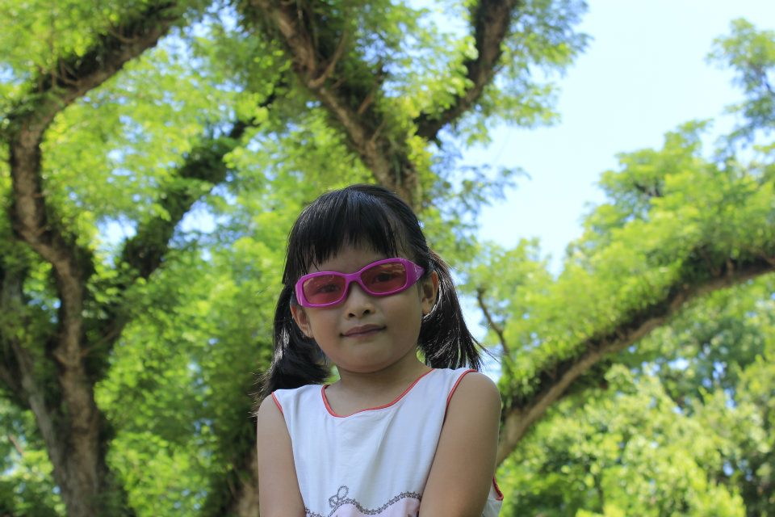

Welcome to My Website!
Hello! My name is Anh (May). I'm a Data Science student at Knox College. I like taking naps in my free time.. Welcome to my website!
Connect with Me
Anh Phan
Profile
Aspiring Data Analyst/Scientist with a strong foundation in programming and analytical skills. Eager to contribute to solving real-world challenges using data-driven insights and grow within a professional environment. Flexible, determined, and hard-working team player.
Education
B.A. Data Science | GPA 3.93 – Relevant coursework: Mathematical Statistics, Data Mining
High School Diploma | SAT: M 800/R&W 730 – Majored in Russian language
Technical Projects
Deepfake Generation & Detection | Python, PyTorch, StyleGAN3, FaceNet, Gradio (June 2025–Present)
Fake News Detector | Python, scikit‑learn, Keras, NLTK, Gradio (Mar 2025–May 2025)
Hospital Chairs Topology | Java, Custom Network Topologies (Sep 2024–Dec 2024)
Technical Skills
Java, Python, SQL, R, HTML, C#, Haskell, Mathematica, TensorFlow, Keras, PyTorch, scikit‑learn, facenet-pytorch, Excel, Google Sheets, Git
Work Experience
Knox College – Troubleshoot lab software/hardware; assist users
Knox College – Tutor essay revisions; teach ESL intensive class
Campus Involvement
Vietnamese Club Treasurer/PR, Honor Board Co‑Chair, Ultimate Frisbee, Badminton Club
My Projects
Fake News Detector
-
This was a project I worked on for my Data Mining class. All details can be found in our paper.
Summary:
1. Abstract
Misinformation is an ever-lasting relevant issue. To combat this, we wanted toDeepfake Generation & Detection
- To be updated
Hospital Chairs
- To be updated
Gallery
Here are some photos I took throughout the years. Click to enlarge!